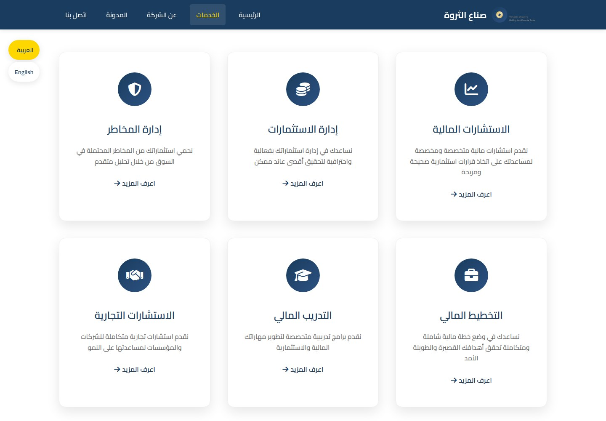
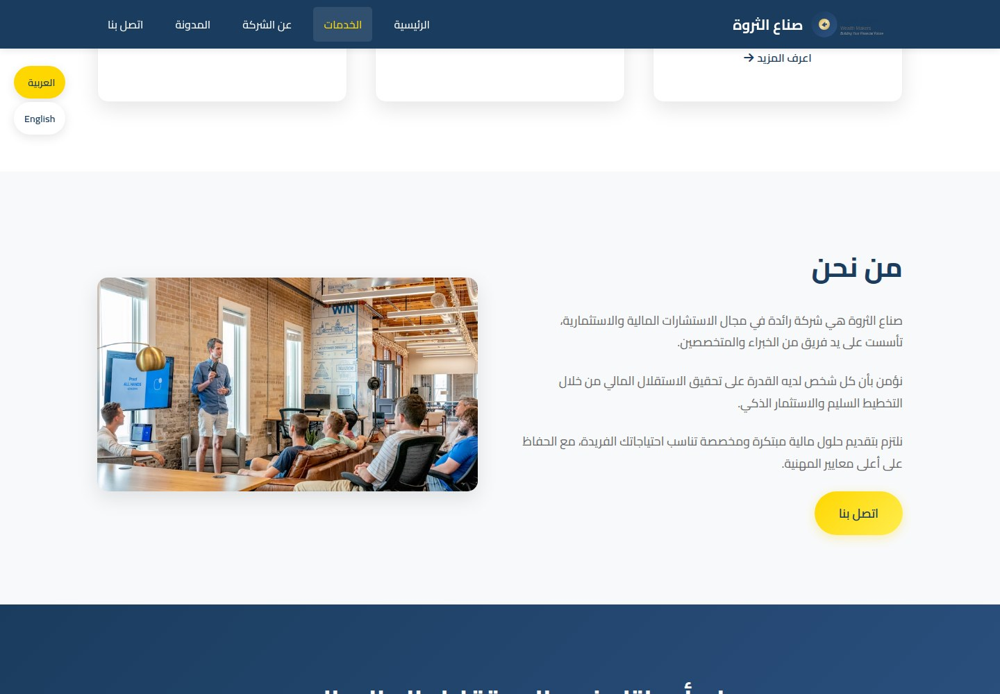
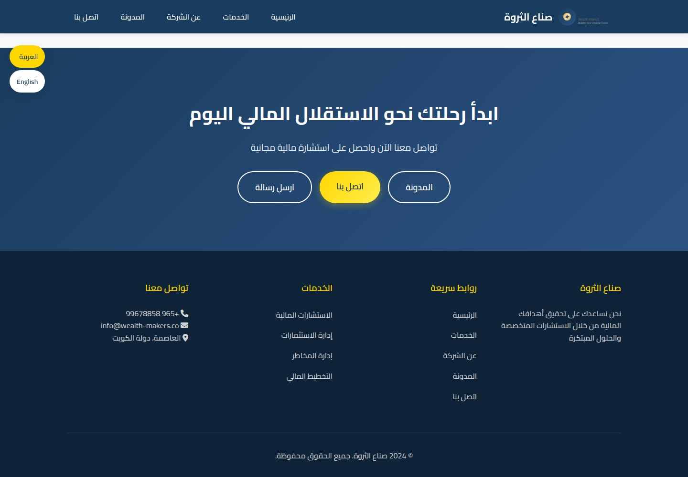
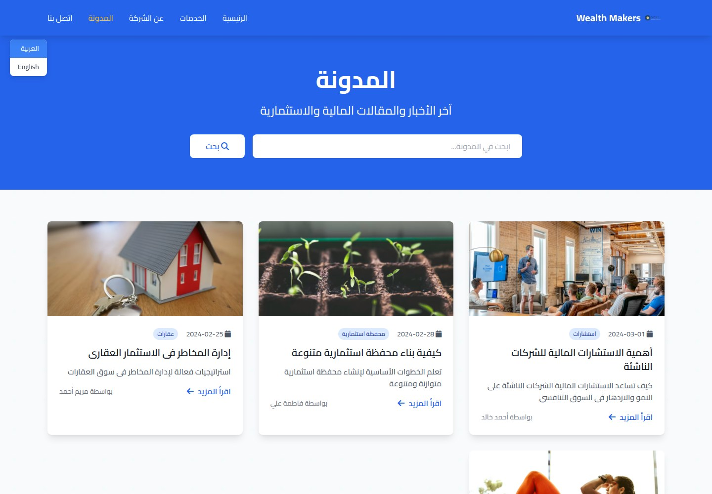
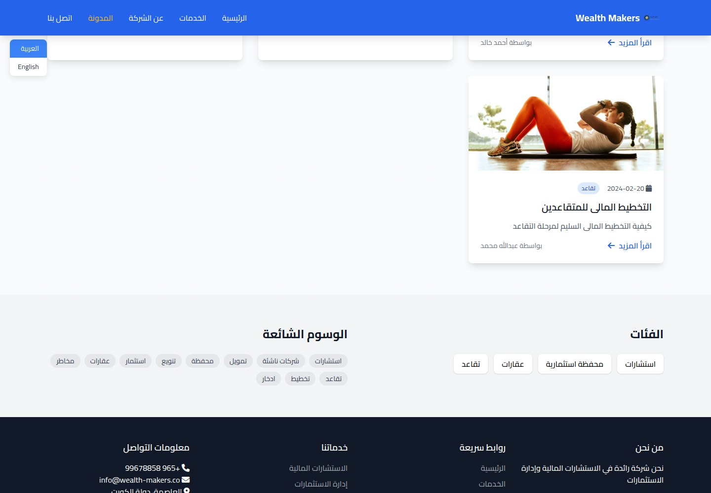
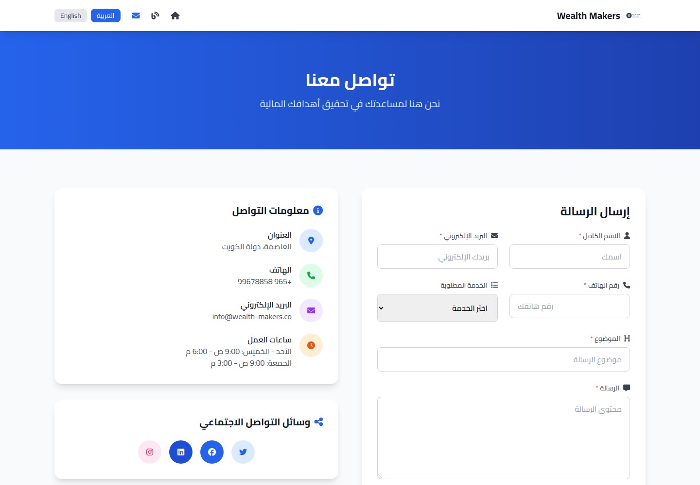
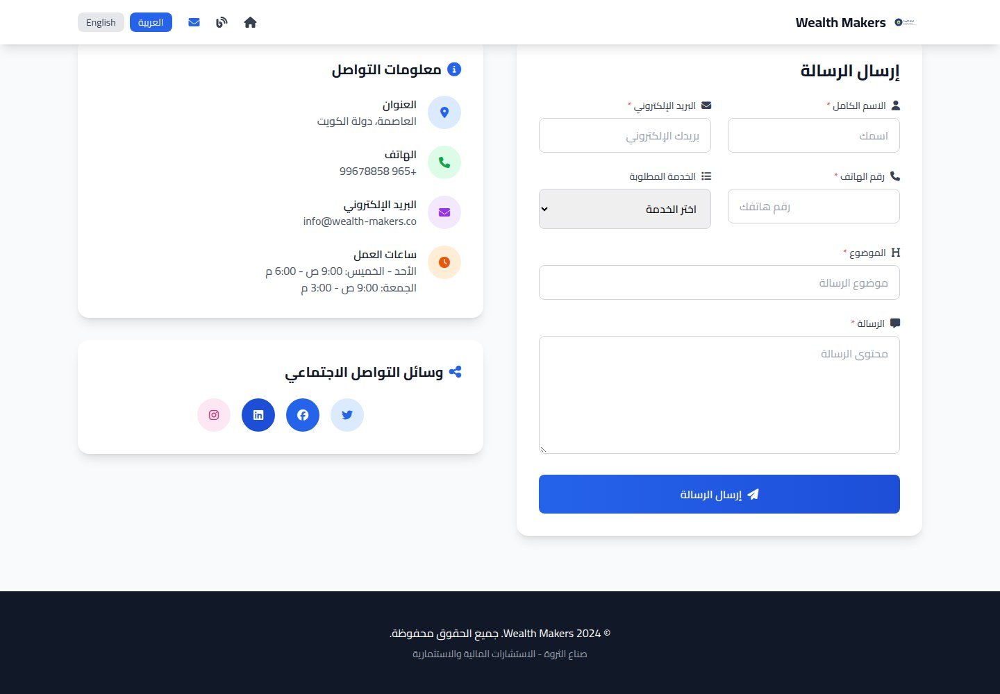
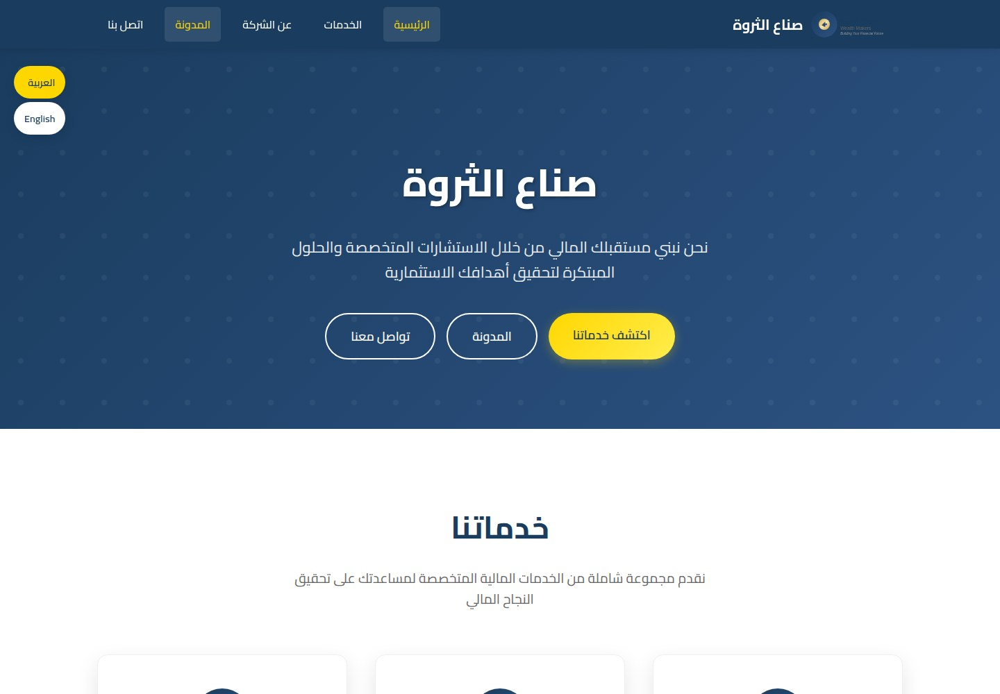
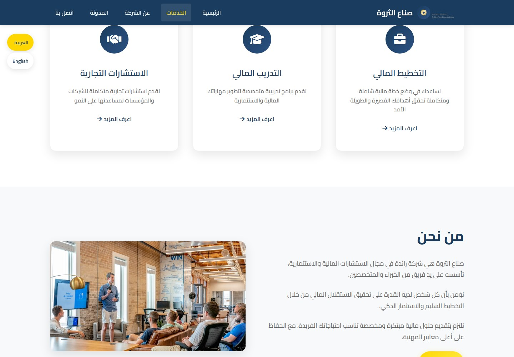
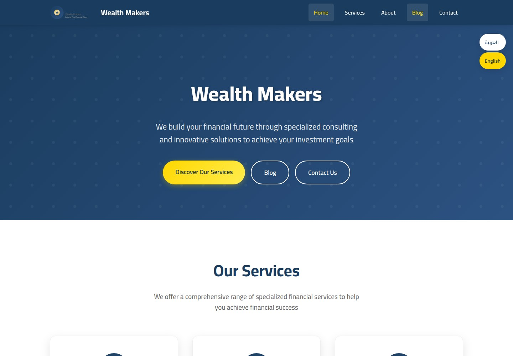

Wealth Makers
Plan with purpose. Build wealth with confidence.

WHAT IT IS
Financial consulting and investment management company
The site presents Wealth Makers as a Kuwait-based financial and investment consultancy offering advisory, investment management, risk management, financial planning, financial training, and business consulting. Its homepage describes helping customers pursue financial and investment goals; this is marketing copy, not independently verified outcomes.
This case study documents what the linked website presents. Individual contribution to this project has not been confirmed.
WHAT THE WEBSITE OFFERS
- Homepage presents six service cards: Financial Consulting, Investment Management, Risk Management, Financial Planning, Financial Training, and Business Consulting, each with a short description (English homepage).
- About section contains company-positioning copy about financial/investment consulting, planning, and customized solutions, alongside a workplace-meeting image (English homepage #about).
- Homepage includes a call-to-action offering a free financial consultation (English homepage).
- Contact page visibly displays a form with required name, email, phone, subject, and message fields, plus a requested-service selector; no form was submitted and its processing is unverified (contact page).
- Contact page lists phone +965 99678858, email info@wealth-makers.co, location in Kuwait, and opening hours (contact page).
- Blog index shows a search field/button, four dated article cards, category labels, and links to article detail pages (blog index).
- An article detail page contains a title, date, author, category/tags, headings, explanatory text and bullet lists (article id=1).
- Visible language switcher offers Arabic and English; the English homepage and Arabic blog/article content were both accessible.
VISITOR JOURNEY
From the homepage, visitors can jump to the Services and About sections using in-page navigation; the About section also offers a Contact link.
AUTHENTIC SCREEN CAPTURES · 11
Inside the experience.
Genuine, distinct screen captures supplied for this project. No screenshots have been fabricated or duplicated.









